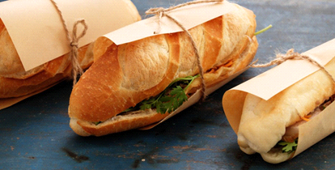
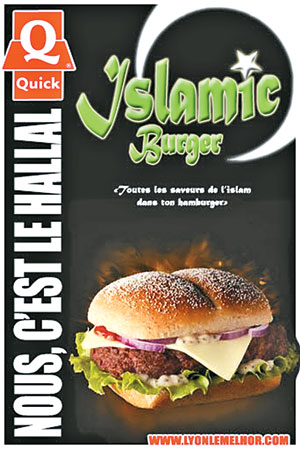

02 자연적 요인과의 관계


건조한 지역에서는 물을 구하기 어렵기에 이러한 음식이 발달하였다
세계 음식과
지리적 특성의 관계
2826 최이레
목차
01 주제 선정 이유
02 자연적 요인과의 관계
덥고 습한 지역에서는 향신료를 많이 사용하여 음식이 상하는 것을 막는다
02 자연적 요인과의 관계
건조한 지역에서는 물을 구하기 어렵기에 이러한 음식이 발달하였다
03 인문적 요인과의 관계

과거 프랑스가 베트남을 식민 지배하는 과정에서 프랑스의 문화가 가미되어
탄생한 음식 중 하나로, 바게트 안에 소를 넣었다
03 인문적 요인과의 관계

이슬람 지역에서는 육류는 할랄 식품만 먹으며, 돼지고기는 먹지 않는다
버거를 예로 들면 육류는 할랄 식품만 사용하며, 주로 소고기나 치킨을 쓴다.
04 소감
- 이번 활동을 통해 지리적 특성에 따른 음식의 특징들을 알게 되었다
- 발표 자료를 만들면서 지도에 정보를 표시하는 다양한 방법을 알게 되었다
끝
終わり
结束
Fin
Конец
Ende
End
Fine
Fim
과거 영어 모의고사 지문으로 '향신료의 양과 기후의 관계' 에 대한 지문이 있었는데,
이를 통해서 기후가 음식에 영향을 줄 수 있다는 처음 사실을 알게 되었고,
이 예시 말고도 기후의 요인들과 음식과의 관련성을 탐구하고자 하였고
이번 활동을 통해서 나의 강점을 드러내고자 이 주제를 선택하게 되었다